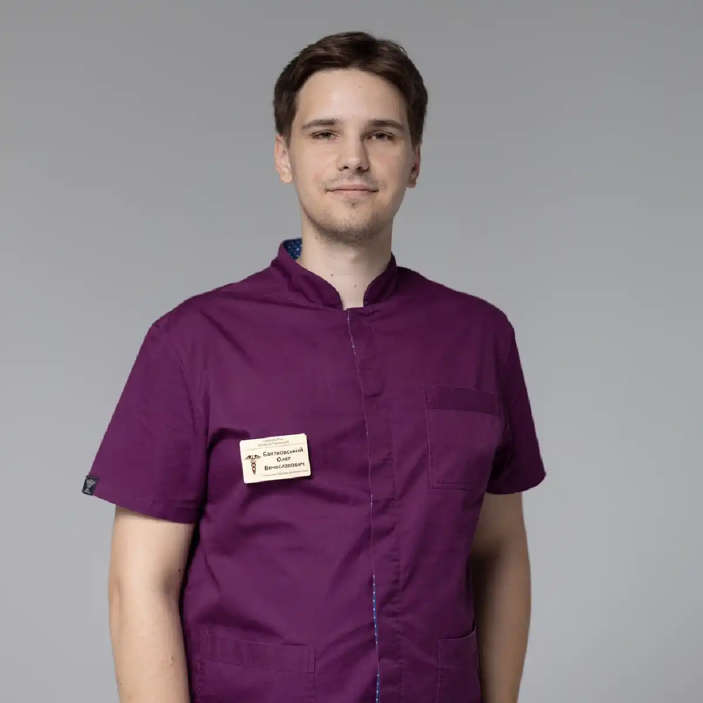

+38(068)
79 72 782
+38(068)
79 72 782Капельница от амфетамина Одесса
Помогаем выйти из интоксикации без рисков


Бесплатная консультация, работаем круглосуточно 24/7
Помогаем выйти из интоксикации без рисков

Дата написания: 3 нояб. 2025 г.
Последнее обновление: 15 июл. 2026 г.
Капельница от амфетамина в Одессе может применяться как часть медицинской помощи после употребления психостимуляторов, если у человека появились обезвоживание, выраженная слабость, тревога, бессонница, тошнота, учащённое сердцебиение или общее ухудшение самочувствия. Процедура проводится только после осмотра пациента и оценки состояния сердечно-сосудистой и нервной системы.
Амфетамин стимулирует центральную нервную систему, может повышать артериальное давление и температуру тела, учащать дыхание и сердцебиение, нарушать сон и провоцировать раздражительность или агрессивное поведение. Реакция зависит от количества и состава вещества, способа употребления, состояния здоровья и сочетания с другими психоактивными веществами. Капельница не способна мгновенно вывести весь амфетамин из организма. Инфузионная терапия используется для поддержания водно-электролитного баланса и уменьшения отдельных симптомов. Основную работу по переработке и выведению вещества выполняют печень и почки. При тяжёлой интоксикации домашняя процедура может быть недостаточной — пациенту требуется экстренная помощь и наблюдение в стационаре.
После употребления амфетамина у человека могут появиться учащённое сердцебиение, повышение артериального давления, сухость во рту, расширение зрачков, потливость, снижение аппетита, тошнота, головная боль и невозможность уснуть. Нередко возникают внутреннее напряжение, повышенная активность, раздражительность, тревожность и ощущение паники. После окончания стимулирующего действия может развиваться состояние выраженного истощения. Человек чувствует сильную слабость, сонливость, подавленность, эмоциональную нестабильность и снижение концентрации. После нескольких эпизодов употребления подряд нарушения сна и тревога могут сохраняться дольше.
У некоторых пациентов психостимуляторы провоцируют подозрительность, спутанность мышления, агрессию или психотические симптомы. Амфетамин относится к веществам, способным вызывать психотические эпизоды, особенно при больших количествах, продолжительном употреблении или отсутствии сна. Выраженность симптомов нельзя определять только по количеству употреблённого вещества. Нелегально приобретённый порошок может содержать неизвестные примеси или другие психоактивные компоненты, поэтому клиническая картина бывает непредсказуемой.
Передозировка наркотиками может сопровождаться потерей сознания или невозможностью разбудить человека, нарушением либо полной остановкой дыхания, посинением губ и кожи, судорогами, сильной болью в груди, очень частым или нерегулярным сердцебиением. Также опасными признаками являются резкое повышение или падение артериального давления, высокая температура тела, выраженная спутанность сознания, галлюцинации, агрессия, сильное возбуждение, многократная рвота и невозможность установить контакт с человеком. До приезда нарколога человека нельзя оставлять одного. Не следует давать ему алкоголь, кофе, энергетические напитки, успокоительные, снотворные или другие препараты без назначения врача. Если человек потерял сознание, необходимо проверить дыхание и осторожно повернуть его на бок.
Капельница после употребления амфетамина может рассматриваться при выраженном обезвоживании, слабости, тошноте, невозможности нормально пить воду, длительном отсутствии сна, тревоге и физическом истощении. Однако решение о процедуре принимает врач после непосредственного осмотра. Перед инфузионной терапией нарколог оценивает сознание, дыхание, температуру тела, давление, пульс, насыщение крови кислородом и признаки обезвоживания. Также важно сообщить врачу, когда и какое вещество употреблялось, было ли несколько эпизодов употребления и принимались ли алкоголь, лекарства или другие наркотики.
Состав капельницы от отравления наркотиками подбирается индивидуально. Терапия может включать растворы для восполнения жидкости и коррекции водно-электролитного баланса, а также симптоматическое лечение по медицинским показаниям. Препараты для снижения тревоги, коррекции давления, пульса или сна нельзя автоматически включать в каждую капельницу. Инфузионная терапия не устраняет наркотическую зависимость и не гарантирует полного восстановления после одной процедуры. Её задача — поддержать организм и уменьшить отдельные проявления интоксикации.
Капельница от амфетамина на дому в Одессе возможна только при относительно стабильном состоянии пациента. Человек должен находиться в сознании, отвечать на вопросы, самостоятельно дышать и не иметь признаков судорог, психоза, тяжёлого перегрева, опасной тахикардии или нарушения сердечного ритма. После приезда нарколог проводит осмотр и определяет, можно ли безопасно оказывать помощь вне стационара. Врач уточняет возраст пациента, наличие заболеваний сердца, сосудов, печени, почек и нервной системы, а также препараты, которые человек принимает постоянно.
Во время процедуры контролируются самочувствие, давление, пульс и реакция организма на инфузию. Скорость введения растворов определяется индивидуально: слишком быстрое поступление жидкости может создавать дополнительную нагрузку на сердце и сосуды. При выявлении боли в груди, высокой температуры, выраженного возбуждения, галлюцинаций, судорог, нарушения сознания или нестабильных жизненно важных показателей врач рекомендует экстренную госпитализацию в наркологический стационар. Разные случаи передозировки стимуляторами могут выглядеть по-разному, поэтому оценка специалиста имеет принципиальное значение.
Стоимость капельницы от амфетамина в Одессе начинается от 2499 грн.
| Популярные услуги | Цена |
|---|---|
| Консультация нарколога | От 1500 грн |
| Лечение наркомании | От 2499 грн |
| Капельница от наркотиков | От 2499 грн |
| Вывод из запоя на дому | От 2199 грн |
Тревога и паническая атака после амфетамина могут сопровождаться учащённым сердцебиением, ощущением нехватки воздуха, дрожью, страхом, внутренним напряжением и невозможностью успокоиться. Важно учитывать, что похожие ощущения иногда возникают при нарушениях сердечного ритма, резком повышении давления или других опасных осложнениях. Перед лечением врач должен исключить состояния, требующие экстренной помощи.
При стабильных показателях медицинская помощь может быть направлена на восполнение жидкости, создание спокойной обстановки и уменьшение отдельных симптомов. Противотревожные и седативные препараты применяются только врачом, поскольку их неправильное сочетание с неизвестными веществами может вызвать нежелательные реакции. Самостоятельно принимать снотворные или успокоительные после амфетамина опасно. Состав нелегального вещества может быть неизвестен, а под видом стимулятора иногда встречаются примеси других препаратов.
Точное время выведения амфетамина зависит от количества вещества, его формы, состава, повторного употребления, работы печени и почек и индивидуальных особенностей организма. У медицинских форм амфетамина средний период полувыведения у взрослых составляет примерно 10–14 часов. Период полувыведения означает время, за которое концентрация вещества уменьшается примерно наполовину. Поэтому полное удаление не происходит через 10–14 часов. На выведение большей части однократно принятого амфетамина обычно требуется несколько периодов полувыведения — ориентировочно около двух-трёх суток. Это расчётная оценка, а не точный срок для каждого человека.
При повторном употреблении, больших количествах, заболеваниях почек или неизвестном составе вещества процесс может занимать больше времени. Анализ мочи также способен оставаться положительным дольше, чем сохраняется выраженное действие вещества; лабораторные источники указывают, что амфетамины могут определяться в моче до трёх дней. Капельница от токсинов не нейтрализует амфетамин мгновенно и не гарантирует отрицательного анализа. Нельзя пытаться ускорять выведение чрезмерным употреблением воды, физическими нагрузками, баней или самостоятельным приёмом мочегонных препаратов.
Первые изменения самочувствия могут появиться во время процедуры или в течение нескольких часов после неё. У пациента могут уменьшиться сухость во рту, жажда, тошнота и физическая слабость. Скорость восстановления зависит от количества употреблённого вещества, продолжительности бессонницы, уровня обезвоживания и общего состояния здоровья. Тревога, раздражительность, упадок сил и нарушения сна могут сохраняться дольше. После продолжительного употребления стимуляторов у некоторых людей возникают подавленное настроение, выраженная усталость и сильное желание снова принять вещество.
Детоксикация не должна оцениваться только по тому, уснул ли пациент после процедуры. Важно контролировать давление, пульс, дыхание, температуру и ясность сознания. Если симптомы усиливаются или появляются боль в груди, судороги, галлюцинации или нарушение сознания, необходимо срочно обратиться за экстренной помощью к наркологу. После домашней процедуры желательно, чтобы рядом с пациентом находился взрослый человек, способный наблюдать за его состоянием и при необходимости вызвать врачей.
Лечение наркомании в Одессе после употребления амфетамина не должно ограничиваться одной капельницей. Детоксикация помогает стабилизировать физическое состояние, но не устраняет психологическую зависимость, тягу к психостимуляторам и причины повторного употребления. После восстановления рекомендуется консультация нарколога и оценка характера употребления. Специалист уточняет частоту эпизодов, продолжительность периодов без сна, наличие тяги, потерю контроля, изменения поведения и влияние наркотика на здоровье, учёбу, работу и отношения с близкими.
Лечение зависимости от стимуляторов может включать индивидуальную психотерапию, поведенческие методы, мотивационную работу, профилактику рецидивов, семейную поддержку и реабилитационную программу. В рекомендациях SAMHSA рассматриваются когнитивно-поведенческие подходы, программы управления вознаграждением и модель Matrix, объединяющая терапию, обучение и профилактику срывов. Формат лечения подбирается индивидуально. Одним пациентам подходит амбулаторное наблюдение, другим необходимы стационар, реабилитационный центр или лечение сопутствующих тревожных, депрессивных и психотических нарушений.
После однократного употребления и при отсутствии осложнений одной капельницы иногда достаточно для уменьшения обезвоживания и отдельных физических симптомов. Однако невозможно заранее гарантировать полное восстановление после одной процедуры. Если человек употреблял психостимуляторы несколько дней подряд, долго не спал, почти не ел или сочетал разные вещества, восстановление может занять больше времени. Врач может рекомендовать повторный осмотр, обследование сердца, контроль давления или лечение в стационаре. Одна капельница от алкоголя и наркотиков не устраняет тягу и не защищает от повторного употребления. Если эпизоды повторяются, человек увеличивает количество вещества или не может самостоятельно остановиться, необходимо начинать лечение зависимости. При подавленности, выраженной апатии, психотических симптомах или резких изменениях поведения после стимуляторов требуется профессиональная оценка психического состояния.
Сочетание амфетамина с алкоголем не делает употребление безопаснее. Стимулирующее действие может маскировать ощущение опьянения, из-за чего человек продолжает пить и недооценивает количество употреблённого алкоголя. Это повышает риск алкогольного отравления, травм и дополнительной нагрузки на сердце. Особенно опасно сочетание психостимуляторов с неизвестными порошками, таблетками, опиоидами или седативными препаратами. Употребление нескольких веществ может привести к непредсказуемым взаимодействиям и увеличить риск передозировки. Нелегально приобретённое вещество также может содержать опасные примеси, включая сильнодействующие опиоиды.
Если после сочетания психостимуляторов и алкоголя сохраняются выраженная интоксикация, слабость, тошнота, тревога, бессонница или учащённое сердцебиение, может потребоваться вывод из запоя на дому в Одессе после осмотра врача и оценки состояния пациента. При тяжёлых симптомах домашняя помощь недопустима — необходима экстренная госпитализация. Врачу необходимо честно сообщить обо всех употреблённых веществах. Эта информация нужна не для осуждения пациента, а для выбора безопасной тактики медицинской помощи.
Выезд нарколога возможен в любой район Одессы: Приморский, Киевский, Хаджибейский и Пересыпский, а также на Черёмушки, Таирова, Молдаванку, Слободку, Фонтан и посёлок Котовского. Врач приезжает по указанному адресу, проводит осмотр и определяет подходящий формат помощи. При обращении желательно заранее сообщить возраст пациента, основные симптомы, приблизительное время последнего употребления, продолжительность бессонницы, наличие хронических заболеваний и употребление других веществ. Чем точнее предоставлена информация, тем легче предварительно оценить риски.
Домашняя помощь проводится конфиденциально, но анонимность не отменяет медицинских требований. При признаках передозировки, психоза, судорог, боли в груди, высокой температуры, нарушения дыхания или потери сознания необходима экстренная госпитализация. Капельница от амфетамина в Одессе помогает уменьшить отдельные проявления интоксикации и поддержать организм, но после стабилизации важно обсудить с наркологом полноценное лечение зависимости и профилактику повторного употребления.
Телефон для консультации и вызова нарколога в Одессе: +38(050-021-69-57)

Статья проверена экспертом
Богоденко Констянтин
Врач анастезиолог, ординатор
Возможно интересная статья:
Как очиститься от наркотиков — рабочие советы

Да, мы строго соблюдаем полную конфиденциальность на всех этапах лечения. Информация о пациенте, диагнозе и прохождении терапии не передаётся третьим лицам. Обращение к нам не влечёт постановку на учёт. Вы можете быть уверены в безопасности и анонимности.
Программа лечения разрабатывается индивидуально после консультации со специалистом. Учитываются вид зависимости, её длительность, физическое и психологическое состояние пациента. Такой подход позволяет повысить эффективность терапии и снизить риск срыва. Мы не используем шаблонные решения.
Да, мы сопровождаем пациентов и после основного курса лечения. Проводятся консультации, рекомендации по адаптации и профилактике рецидивов. При необходимости возможна дальнейшая психологическая поддержка. Это помогает сохранить результат и вернуться к полноценной жизни.
Анонимно

Помогли при наркотической зависимости
Номер телефона:
+380 (68) 797 27 82
+380 (50) 021 69 57
Адрес наркологического центра вашего города уточняйте по
телефону
Работаем в: Киеве, Одессе, Львове, Харькове, Днепре,
Запорожье, Черкассах, Чугуеве, Черноморске, Каменском
Telegram: t.me/umbrellaplus
График работы: Круглосуточно